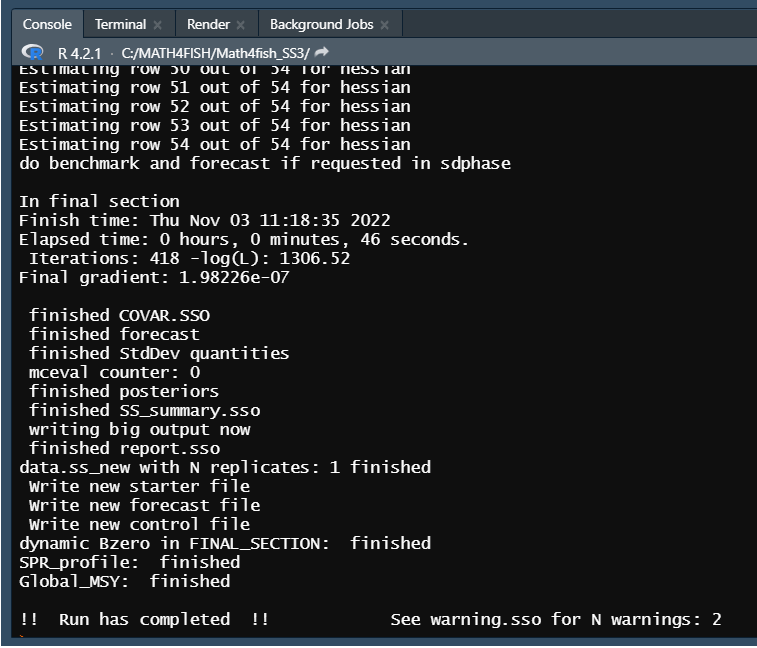

Cómo ejecutar modelos SS3
Para comenzar descargue los archivos del modelo simple (starter.ss, data.ss, forecast.ss, control.ss) y el ejecutable SS3 (ss.exe, hacer clic en Download), y luego guardelos en su directorio de trabajo, como se muestra a continuación.

Para ejecutar el modelo simple utilizaremos la función
run_SS_models de la libreria r4ss . Debemos especificar el
directorio de trabajo que contiene los archivos del modelo (dirvec =
mod_path) y el nombre del ejecutable (model=exe_path) como se muestra a
continuación.
library(r4ss)
mod_path <- paste(getwd(),'/model_files/simple',sep="")
exe_path <- paste(mod_path,"ss_win.exe",sep= "/")
r4ss::run_SS_models(dirvec=mod_path, model=exe_path,skipfinished=FALSE)Al iniciar la ejecución, SS3 siempre lee los archivos starter.ss, data.ss y forecast.ss, control.ss en el mismo orden, escribiendo las salidas de debugging en echoinput.sso y advertencias en warnings.sso a medida que se lee.
Si la salida no se ejecuta o NO SUPERA el mensaje Estimating…please wait…, entonces siga los siguientes pasos:
- Asegurese de que todos los archivos y directorios tengan el nombre correcto.
- Verifique que el archivo starter.ss tenga los nombres correctos de los archivos de control.ss y data.ss.
- Si SS3 comienza a leer archivos y luego falla, revise los archivos warnings.sso y echoinput.sso. Mirar el último contenido escrito en echoinput.sso y compararlo con sus archivos de entrada puede proporcionar pistas sobre dónde (y posiblemente por qué) falló la ejecución.
Si la salida SI SUPERA el mensaje Estimating…please wait… entonces la estructura de los datos de entrada de SS3 es correcta y por lo tanto, debería ver un resultado en la línea de comando similar a la que se muestra a continuación.

Luego, SS3 va a la sección de procedimiento donde ADMB realiza cambios iterativos de parámetros (iteration) para minimizar la función de verosimilitud (-log(L)), como se muestra a continuación.

Cuando ADMB logra la convergencia, el control pasa a sdphase para el
cálculo de la varianza de los parámetros (a menos que se especifique la
opción -nohess). Después de sdphase, SS3 pasa a la sección
de código de benchmark y forecast y luego al reporte final. Cuando se
completa la ejecución de SS3, aparece !! Run has completed
!!.
Se recomienda revisar el archivo warnings.sso en busca de problemas y sugerencias, independientemente si la ejecución se completó correctamente o no, ya que incluye sugerencias para mejorar la especificación del modelo y advertencias sobre errores comunes de especificación del modelo.
Si SS3 no fue ejecutado correctamente, no verá el mensaje !! Run has completed !!.

Los archivos de salida que contienen resultados normalmente se escriben en el directorio de trabajo donde fue ejecutado el modelo SS3, como se muestra a continuación.
mod_path <- paste(getwd(),'/model_files/simple',sep="")
dir(mod_path)## [1] "admodel.cov" "admodel.dep" "admodel.hes"
## [4] "CompReport.sso" "control.ss" "control.ss_new"
## [7] "covar.sso" "CumReport.sso" "data.ss"
## [10] "data_echo.ss_new" "derived_posteriors.sso" "echoinput.sso"
## [13] "fmin.log" "Forecast-report.sso" "forecast.ss"
## [16] "forecast.ss_new" "ParmTrace.sso" "plots"
## [19] "posterior_obj_func.sso" "posterior_vectors.sso" "posteriors.sso"
## [22] "rebuild.sso" "Reference_Run" "Report.sso"
## [25] "runnumber.ss" "SIS_table.sso" "ss.b01"
## [28] "ss.b02" "ss.b03" "ss.b04"
## [31] "ss.bar" "ss.cor" "ss.eva"
## [34] "ss.p01" "ss.p02" "ss.p03"
## [37] "ss.p04" "ss.par" "ss.r01"
## [40] "ss.r02" "ss.r03" "ss.r04"
## [43] "ss.rep" "ss.std" "ss_summary.sso"
## [46] "ss_win.exe" "ss_win.log" "starter.ss"
## [49] "starter.ss_new" "warning.sso" "wtatage.ss_new"
Muchos archivos de texto de salida se crean durante la ejecución del modelo. Los archivos de salida más útiles se pueden dividir en :
- Archivos que contienen resultados. Estos archivos incluyen ss_summary.sso y Report.sso que contienen los resultados del modelo resumidos de diferentes maneras.
- .ss_new files. Estos archivos repiten los archivos de entrada SS3, pero incluyen comentarios estandarizados. Los valores deben ser los mismos que los archivos de entrada, excepto control.ss_new, que actualiza los valores iniciales a los valores estimados finales. Los archivos .ss_new pueden ser útiles para estandarizar los comentarios en los archivos de entrada y se pueden verificar para asegurarse de que SS3 interpretó las entradas como pretendía el usuario.
- Archivos utilizados para debugging. Estos archivos incluyen warnings.sso y echoinput.sso.
Cómo crear nuevos modelos SS3
Hay muchos flujos de trabajo potenciales para desarrollar un nuevo modelo SS3, pero una técnica común es comenzar con un modelo existente y cambiarlo por partes. La técnica básica es:
Encuentre un modelo de trabajo existente (quizás uno de los modelos de ejemplo SS3 disponibles en el repositorio de ejemplos de usuario o quizás un modelo más similar en forma al modelo que planea crear).
Editar partes del modelo e intentar ejecutar a medida que avanza para verificar que SS3 pueda leer correctamente sus entradas y que tengan sentido lógico (consejo: use options
-stopph 0 -nohesspara reducir el tiempo de ejecución con cada iteración de verificación de entradas al no estimar nada y no invertir la hessiana).
A continuación mostramos el flujo de trabajo para modificar archivos de entrada y ejecutar modelos utilizando la Guía de library r4ss .
Demostraremos esto creando un nuevo directorio para nuestro nuevo
modelo (new_mod_path) y luego copiaremos los archivos del
directorio que contiene el modelo inicial (mod_path) en el
nuevo directorio, como se indica a continuación.
# initial model to modify
mod_path <- paste(getwd(),'/model_files/simple',sep="")
# create a new directory to put a new, modified version of the model
new_mod_path <- paste(getwd(),'/model_files/simple_new',sep="")Se utiliza la funcion copy_SS_inputs de la librería r4ss
para copiar los archivos del directorio de trabajo del modelo inicial
(dir.old=mod_path) al directorio de trabajo del nuevo
modelo (dir.new=new_mod_path).
library(r4ss)
copy_SS_inputs(dir.old = mod_path, dir.new = new_mod_path)Luego podemos leer los archivos copiados en nuestro nuevo directorio
como objetos de lista en R usando las funciones
SS_read*().
start <- r4ss::SS_readstarter(file = file.path(new_mod_path, "starter.ss"), verbose = FALSE)
# note the data and control file names can vary, so are determined from the
# starter file.
dat <- r4ss::SS_readdat(file = file.path(new_mod_path, start$datfile),verbose = FALSE)
# Read in ctl file. Note that the data fileR object is needed so that SS_readctl
# assumes the correct data structure
ctl <- r4ss::SS_readctl(file = file.path(new_mod_path, start$ctlfil),verbose = FALSE,
use_datlist = TRUE, datlist = dat)
fore <- r4ss::SS_readforecast(file = file.path(new_mod_path, "forecast.ss"),verbose = FALSE)
# can also read in wtatage.ss for an empirical wt at age model using
# r4ss::SS_readwtatage()A continuación investigamos el modelo, cada uno de los archivos de
entrada se lee en R como una lista. Los componentes de la lista deben
estar en el mismo orden en que aparecen en el archivo de texto. Use
names() para ver todos los componentes de la lista:
names(start) # see names of the list components of starter## [1] "sourcefile" "type" "SSversion"
## [4] "datfile" "ctlfile" "init_values_src"
## [7] "run_display_detail" "detailed_age_structure" "checkup"
## [10] "parmtrace" "cumreport" "prior_like"
## [13] "soft_bounds" "N_bootstraps" "last_estimation_phase"
## [16] "MCMCburn" "MCMCthin" "jitter_fraction"
## [19] "minyr_sdreport" "maxyr_sdreport" "N_STD_yrs"
## [22] "converge_criterion" "retro_yr" "min_age_summary_bio"
## [25] "depl_basis" "depl_denom_frac" "SPR_basis"
## [28] "F_report_units" "F_age_range" "F_report_basis"
## [31] "MCMC_output_detail" "ALK_tolerance" "final"
## [34] "seed"También se puede hacer referencia a un elemento específico para ver los componentes. Por ejemplo, podemos mirar la sección de parámetros de mortalidad y crecimiento (MG_parms):
ctl$MG_parms## LO HI INIT PRIOR PR_SD
## NatM_p_1_Fem_GP_1 5e-02 0.150000 0.20000000 0.10000000 0.8
## L_at_Amin_Fem_GP_1 -1e+01 45.000000 21.65350000 36.00000000 10.0
## L_at_Amax_Fem_GP_1 4e+01 90.000000 71.64930000 70.00000000 10.0
## VonBert_K_Fem_GP_1 5e-02 0.250000 0.14729700 0.15000000 0.8
## CV_young_Fem_GP_1 5e-02 0.250000 0.10000000 0.10000000 0.8
## CV_old_Fem_GP_1 5e-02 0.250000 0.10000000 0.10000000 0.8
## Wtlen_1_Fem_GP_1 -3e+00 3.000000 0.00000244 0.00000244 0.8
## Wtlen_2_Fem_GP_1 -3e+00 4.000000 3.34694000 3.34694000 0.8
## Mat50%_Fem_GP_1 5e+01 60.000000 55.00000000 55.00000000 0.8
## Mat_slope_Fem_GP_1 -3e+00 3.000000 -0.25000000 -0.25000000 0.8
## Eggs/kg_inter_Fem_GP_1 -3e+00 3.000000 1.00000000 1.00000000 0.8
## Eggs/kg_slope_wt_Fem_GP_1 -3e+00 3.000000 0.00000000 0.00000000 0.8
## NatM_p_1_Mal_GP_1 5e-02 0.150000 0.10000000 0.10000000 0.8
## L_at_Amin_Mal_GP_1 0e+00 45.000000 0.00000000 36.00000000 10.0
## L_at_Amax_Mal_GP_1 4e+01 90.000000 69.53620000 70.00000000 10.0
## VonBert_K_Mal_GP_1 5e-02 0.250000 0.16353300 0.15000000 0.8
## CV_young_Mal_GP_1 5e-02 0.250000 0.10000000 0.10000000 0.8
## CV_old_Mal_GP_1 5e-02 0.250000 0.10000000 0.10000000 0.8
## Wtlen_1_Mal_GP_1 -3e+00 3.000000 0.00000244 0.00000244 0.8
## Wtlen_2_Mal_GP_1 -3e+00 4.000000 3.34694000 3.34694000 0.8
## RecrDist_GP_1 0e+00 0.000000 0.00000000 0.00000000 0.0
## RecrDist_Area_1 0e+00 0.000000 0.00000000 0.00000000 0.0
## RecrDist_month_1 0e+00 0.000000 0.00000000 0.00000000 0.0
## CohortGrowDev 1e-01 10.000000 1.00000000 1.00000000 1.0
## FracFemale_GP_1 1e-06 0.999999 0.50000000 0.50000000 0.5
## PR_type PHASE env_var&link dev_link dev_minyr
## NatM_p_1_Fem_GP_1 0 -3 0 0 0
## L_at_Amin_Fem_GP_1 6 2 0 0 0
## L_at_Amax_Fem_GP_1 6 4 0 0 0
## VonBert_K_Fem_GP_1 6 4 0 0 0
## CV_young_Fem_GP_1 0 -3 0 0 0
## CV_old_Fem_GP_1 0 -3 0 0 0
## Wtlen_1_Fem_GP_1 0 -3 0 0 0
## Wtlen_2_Fem_GP_1 0 -3 0 0 0
## Mat50%_Fem_GP_1 0 -3 0 0 0
## Mat_slope_Fem_GP_1 0 -3 0 0 0
## Eggs/kg_inter_Fem_GP_1 0 -3 0 0 0
## Eggs/kg_slope_wt_Fem_GP_1 0 -3 0 0 0
## NatM_p_1_Mal_GP_1 0 -3 0 0 0
## L_at_Amin_Mal_GP_1 0 -3 0 0 0
## L_at_Amax_Mal_GP_1 6 4 0 0 0
## VonBert_K_Mal_GP_1 6 4 0 0 0
## CV_young_Mal_GP_1 0 -3 0 0 0
## CV_old_Mal_GP_1 0 -3 0 0 0
## Wtlen_1_Mal_GP_1 0 -3 0 0 0
## Wtlen_2_Mal_GP_1 0 -3 0 0 0
## RecrDist_GP_1 0 -4 0 0 0
## RecrDist_Area_1 0 -4 0 0 0
## RecrDist_month_1 0 -4 0 0 0
## CohortGrowDev 0 -1 0 0 0
## FracFemale_GP_1 0 -99 0 0 0
## dev_maxyr dev_PH Block Block_Fxn PType
## NatM_p_1_Fem_GP_1 0 0 0 0 1
## L_at_Amin_Fem_GP_1 0 0 0 0 2
## L_at_Amax_Fem_GP_1 0 0 0 0 2
## VonBert_K_Fem_GP_1 0 0 0 0 2
## CV_young_Fem_GP_1 0 0 0 0 2
## CV_old_Fem_GP_1 0 0 0 0 2
## Wtlen_1_Fem_GP_1 0 0 0 0 3
## Wtlen_2_Fem_GP_1 0 0 0 0 3
## Mat50%_Fem_GP_1 0 0 0 0 4
## Mat_slope_Fem_GP_1 0 0 0 0 4
## Eggs/kg_inter_Fem_GP_1 0 0 0 0 5
## Eggs/kg_slope_wt_Fem_GP_1 0 0 0 0 5
## NatM_p_1_Mal_GP_1 0 0 0 0 1
## L_at_Amin_Mal_GP_1 0 0 0 0 2
## L_at_Amax_Mal_GP_1 0 0 0 0 2
## VonBert_K_Mal_GP_1 0 0 0 0 2
## CV_young_Mal_GP_1 0 0 0 0 2
## CV_old_Mal_GP_1 0 0 0 0 2
## Wtlen_1_Mal_GP_1 0 0 0 0 3
## Wtlen_2_Mal_GP_1 0 0 0 0 3
## RecrDist_GP_1 0 0 0 0 7
## RecrDist_Area_1 0 0 0 0 8
## RecrDist_month_1 0 0 0 0 9
## CohortGrowDev 0 0 0 0 11
## FracFemale_GP_1 0 0 0 0 14
Puede realizar cambios estructurales básicos o grandes en su modelo en R. Por ejemplo, el valor inicial de M se puede cambiar:
# view the initial value
ctl$MG_parms["NatM_p_1_Fem_GP_1", "INIT"]
#> [1] 0.1
#change it to 0.2
ctl$MG_parms["NatM_p_1_Fem_GP_1", "INIT"] <- 0.2Al realizar grandes cambios estructurales, es posible que sea necesario agregar elementos adicionales que antes eran NULL.
Algunas entradas requeridas están especificadas en otras entradas, por lo que es importante tener en cuenta que cambiar una opción puede hacer que SS3 espere una cantidad diferente de valores en los archivos de entrada que antes. La mayoría de las veces, estas especificaciones se leen justo después de la opción.
El manual de usuario SS3 se puede utilizar como guía editar su modelo. Las especificaciones se indican en el manual.
Para averiguar los nombres en el objeto de la lista r4ss, puede ser
necesario realizar cambios directamente en los archivos de entrada y
luego leerlos nuevamente en R, o buscar en el código fuente los nombres
de los elementos de la lista. Por ejemplo, el código fuente de
SS_readctl() cuando se usa un archivo SS3.30 se encuentra
en https://github.com/r4ss/r4ss/blob/main/R/SS_readctl_3.30.R.
También se pueden modificar las especificaciones en otros archivos. Por ejemplo, la biomasa objetivo se puede modificar en el archivo forecast.ss.
fore$Btarget
#> [1] 0.342
fore$Btarget <- 0.45
fore$Btarget
#> [1] 0.45Las funciones SS_write*() se pueden usar para escribir
los objetos R de entrada de SS3 modificados en archivos de entrada:
r4ss::SS_writestarter(start, dir = new_mod_path, overwrite = TRUE,
verbose = FALSE)## overwriting file: C:/MATH4FISH/Math4fish_SS3/model_files/simple_new/starter.ss#> overwriting file: simple_new/starter.ss
r4ss::SS_writedat(dat, outfile = file.path(new_mod_path, start$datfile),
overwrite = TRUE, verbose = FALSE)
r4ss::SS_writectl(ctl, outfile = file.path(new_mod_path, start$ctlfile),
overwrite = TRUE, verbose = FALSE)
r4ss::SS_writeforecast(fore, dir = new_mod_path, file = "forecast.ss",
overwrite = TRUE, verbose = FALSE)Si realiza cambios en los archivos del modelo de entrada que hacen
que SS3 no pueda analizar el archivo, las funciones
SS_write*() pueden generar un error (y, con suerte, brindar
un mensaje informativo sobre el motivo). Sin embargo, es posible que se
escriba un archivo de modelo de SS3 no válido, por lo que la verdadera
prueba es si es posible o no ejecutar SS3 con los archivos de modelo
modificados.
Si necesita ayuda para solucionar problemas de las funciones
SS_read*() o SS_write*() o desea informar un
error, publique un problema en el repositorio r4ss.
El modelo ahora se puede ejecutar con la función
run_SS_models como se muestra a continuación:
r4ss::run_SS_models(dirvec = new_mod_path, model = exe_path ,skipfinished = FALSE)Si no está seguro de haber realizado la configuración correcta
(p. ej., agregando el número correcto de líneas de parámetros para una
configuración de capturabilidad elegida), intente ejecutar el modelo con
maxphase = 0 en el archivo de start.ss y
la opción ADMB -nohess (o para SS3 3.30. 16 y posteriores,
ejecute el modelo con opciones de línea de comando
-stopph 0 -nohess, no es necesario cambiar el archivo
start.ss). Si se completa la ejecución del modelo,
puede comparar el archivo control.ss_new y el primer
conjunto de datos en data.ss_new con sus archivos de
entrada de SS3 para asegurarse de que SS3 interpretó los valores según
lo previsto. Si la ejecución finaliza antes de completarse, puede buscar
en warning.sso y echoinput.sso para
obtener pistas sobre el problema de su configuración.
Fases de estimación de parámetros
Las fases se utilizan dentro de ADMB para decirle al programa en qué orden se deben estimar los parámetros. Para obtener más detalles sobre las fases en ADMB, consulte el manual de usuario de ADMB.
Una fase negativa indica que el parámetro no se estima, sino que se especifica.
Una fase positiva indica que el parámetro será estimado. Los parámetros con una fase positiva más baja se estimarán antes que aquellos con una fase positiva más alta.
¿En qué fase debería poner un parámetro estimado?
Si bien existe variabilidad entre los analistas y los modelos en la forma en que se utiliza la fase, en general, los parámetros con fases positivas bajas deben ser para valores que definen la escala de la población (es decir, R0, mortalidad natural, steepness, selectividad).
Los parámetros para afinar los ajustes a los datos a menudo se estiman en fases posteriores (es decir, parámetros de capturabilidad, crecimiento y desviación del reclutamiento). Muchos modelos usan fases positivas de aproximadamente 1 a 5, aunque es posible usar valores de fase más altos.
Cuando se ejecuta un modelo sin estimar nada, las fases se ignoran; debido a que no hay estimación, ejecutar sin estimación es como incluir una fase negativa para todos los parámetros.
Flujo de trabajo para llegar a un modelo final
¡Es importante recordar que llegar a un modelo final lleva tiempo y muchas iteraciones! Es importante realizar pequeñas revisiones, volver a ejecutar el modelo y ver cómo ha cambiado el modelo con cada pequeña revisión. Por lo general, se requieren muchas ejecuciones intermedias del modelo antes de llegar a un modelo final.
La creación de secuencias de comandos con funciones r4ss es una forma de desarrollar un flujo de trabajo reproducible y coherente de SS3. Sin embargo, hay muchas formas de ejecutar y modificar los modelos de SS3. Lo más importante es encontrar un flujo de trabajo que funcione y que los cambios que se realizan en un modelo puedan ser documentados. Como mínimo, mantener notas dentro de la carpeta de la ejecución o en otro lugar con respecto a los cambios específicos de la ejecución. El control de versiones (como git) es otra herramienta que puede ayudar a realizar un seguimiento de los cambios en los modelos.
A continuación, se muestran algunas sugerencias sobre los pasos a seguir a medida que itera hacia su modelo “final”.
1. Ejecutar el modelo sin estimación
Primero, verifique que SS3 lea los archivos de entrada según lo
previsto. Utilice las opciones de línea de comando
-stopph 0 -nohess para ejecutar el modelo sin estimación.
Luego, examine los archivos de warning.sso,
echoinput.sso y .ss_new files
producidos para ver cómo SS3 interpretó sus archivos de entrada y si fue
como pretendía.
Una vez que haya verificado que SS3 está leyendo su entrada correctamente, también puede considerar ajustar los parámetros de selectividad, crecimiento y reclutamiento.
2. Ejecutar estimando algunos parámetros
Intente cambiar la fase máxima para que sea mayor que 0 (quizás 2 o
3) para estimar algunos pero no todos los parámetros. Haga esto usando
-stopph x -nohess, donde x debe ser la fase máxima deseada
(por ejemplo, 2 o 3). -nohess todavía se usa para reducir
el tiempo de ejecución. Durante esta etapa de las ejecuciones del
modelo, debe intentar ajustar el modelo para resolver todos los patrones
principales en los residuales. Esto puede incluir considerar y realizar
cambios en la estructura del modelo.
3. Ejecutar estimando todos los parámetros
Una vez que se hayan resuelto todos los patrones principales en los residuos, intente estimar todos los parámetros en el modelo. Cambie la fase máxima para incluir todas las fases de su modelo (es decir, igual o superior a la fase más alta especificada en su modelo). Querrá hacer varias ejecuciones para diferentes propósitos de refinamiento del modelo en este momento:
- Realice una o más corridas con la hessiana estimada para obtener la varianza de las desviaciones de reclutamiento y luego use este vector de varianzas para ajustar la rampa de ajuste del sesgo (consulte el Manual del usuario de SS3 para obtener detalles adicionales).
- Realice ejecuciones con o sin estimar la hessiana para ajustar las ponderaciones de datos.
- Ejecute el modelo varias veces y altere los valores iniciales (la opción de fluctuación se selecciona en starter.ss). Esto ejecuta el modelo con nuevos valores de parámetros iniciales para determinar si es posible un mejor ajuste del modelo utilizando diferentes valores iniciales.
Después de estas ejecuciones, su modelo debería estar ajustado y listo para las ejecuciones finales.